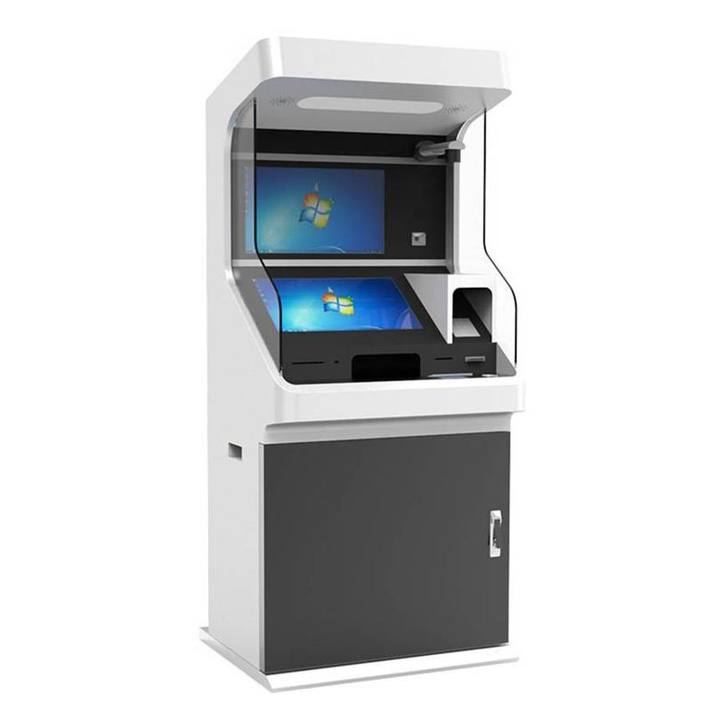
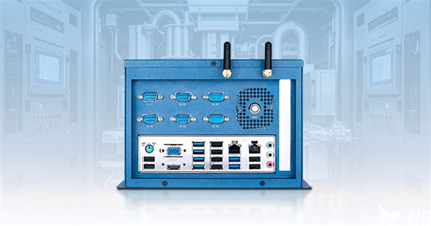
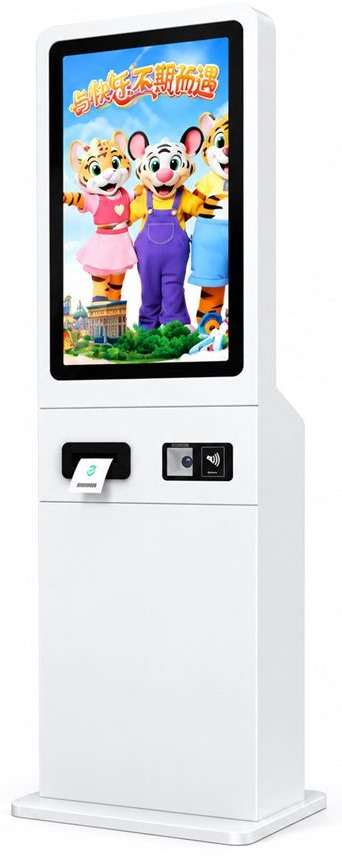
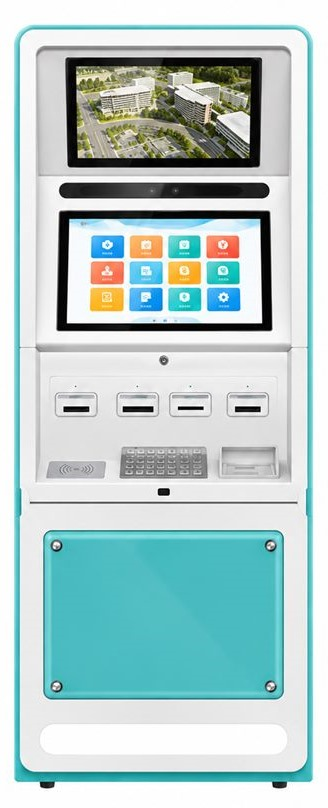
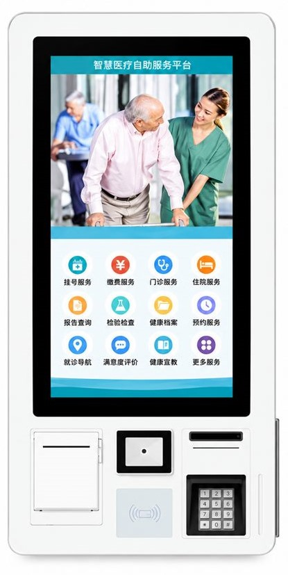

Restaurant & Retail
Self-Ordering Kiosks
TouchscreenTouchscreen ordering terminals designed around the restaurant or retail customer journey.


Floor-standing, counter-top and wall-mounted touchscreen terminals for self-ordering, self-payment, check-in, ticketing and information service, configured for OEM and ODM projects.
Four terminal categories covering ordering, payment, check-in and ticketing.
Touchscreen ordering terminals designed around the restaurant or retail customer journey.
Payment-ready kiosk hardware layouts with space for scanners, printers and third-party payment devices.

Check-in and registration terminal layouts for visitor, hospitality and service environments.

Ticket issuing and queue management terminals for customer-facing service locations.
The computing hardware behind self-service kiosks, control cabinets and field equipment.

Blue fanless box PC with six DB9 serial ports and dual Wi-Fi antennas on the front panel, over a lower I/O strip carrying dual LAN, HDMI, VGA, four USB ports and audio.

Black-bezel industrial panel PC depicted running a machine HMI dashboard, with a black aluminium rear housing and an X-braced mounting frame.

Black Android mainboard for signage and terminal builds: finned heatsink over the processor, RJ45, four USB ports, HDMI, audio jack, DC jack and colour-coded terminal blocks.

White-bezel touch panel shown in two builds — one running an Android desktop, one running a Windows desktop — with a slim white rear housing and X-braced wall bracket.
Each terminal is defined by the task users complete: ordering, payment, registration, ticketing or information lookup.
Printer, scanner, camera, NFC/RFID reader and payment-device mounting planned with the enclosure.
OEM & ODM support for cabinet size, colour, logo, screen orientation, platform and interface requirements.
Requirement review, specification discussion and prototype validation before a project moves to production.
One route for a single prototype and a production batch. The numbers below are our standard process and are confirmed again in the quotation.
Every finished unit runs a 12-hour burn-in with the display, card readers, printer and scanner exercised in a loop before it is packed.
Standard lead time is 15 days from deposit and approved drawing or sample, for orders inside our standard module set.
Prototype and pilot units follow the same test route as volume orders, so a single sample is representative of the batch.
Cabinets are laser cut, CNC bent and powder coated; colour and logo are approved on a sample before the batch runs.
Printers, readers, scanners and cameras are mounted and tested as one set, so the terminal arrives with a working peripheral stack instead of loose parts.
Final inspection covers function, finish, labelling and packing list, and the packed unit is photographed for the order record.
Certification paperwork for CE, FCC and RoHS is prepared per destination market when the project requires it.
Kiosk buying guides, OEM/ODM checklists and deployment advice.

A practical method for defining kiosk application, display, peripherals, operating system and deployment conditions before requesting a quotation.
→
What to prepare for an OEM or ODM kiosk RFQ, including cabinet design, modules, software, certifications, test samples and project milestones.
→
Compare kiosk installation styles by footprint, viewing height, serviceability, peripherals and customer traffic patterns.
→